Martín Álvarez-Espinar — CTIC Centro Tecnológico
Presentació IMACA
Martín Álvarez-Espinar — CTIC Centro Tecnológico
Andorra, 9 novembre 2017
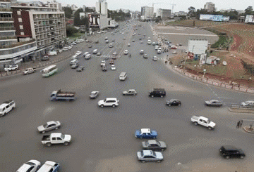
Publicar la informació del sector públic, en formats oberts, estàndard i interoperables, facilitant el seu accés i permetent la seva reutilització.
Foto: Markus Spiske
Foto: Markus Spiske
Foto: Paul Bergmeir
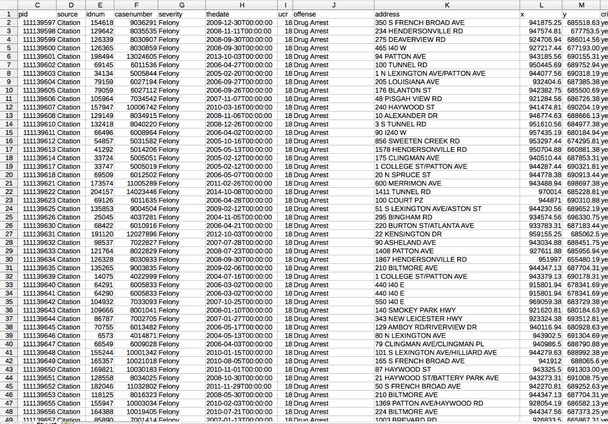
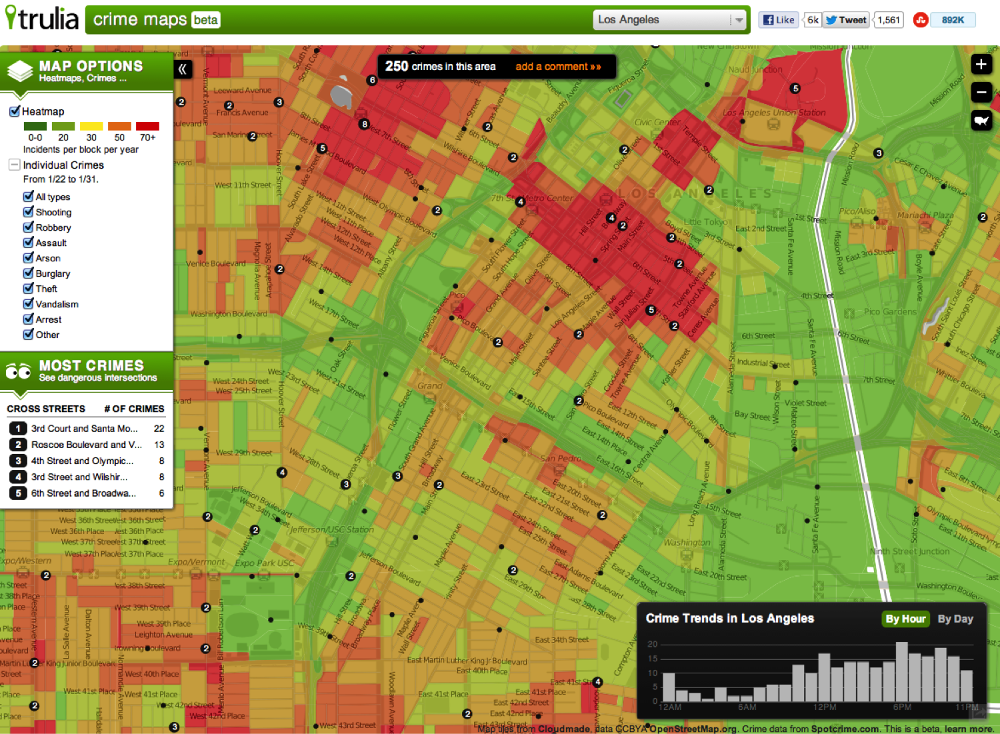
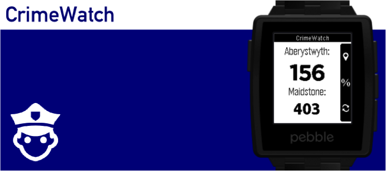
Opening up datasets with a high use and re-use potential is expected to lead to the creation of new products and/or services that have direct or indirect economic or social impact and/or positive economic externalities. The base
registers, geospatial data, transport data and statistics constitute prime examples of datasets with a high use and re-use potential.
European Commission, Results of the online survey on recommended standard licensing, datasets and charging for the re-use of public sector information
Foto: Markus Spiske
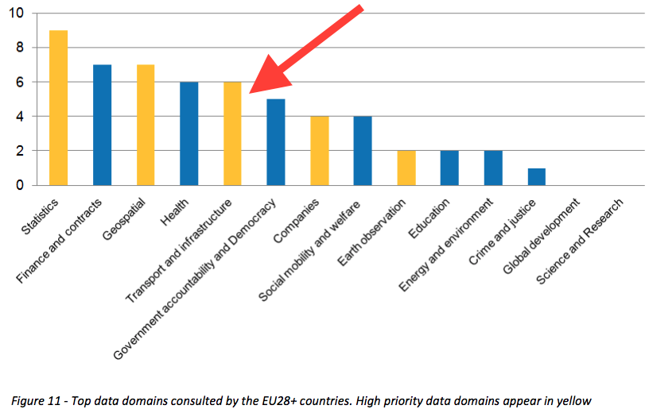
Open Data Maturity in Europe 2015 (Insightsinto the European state of play)
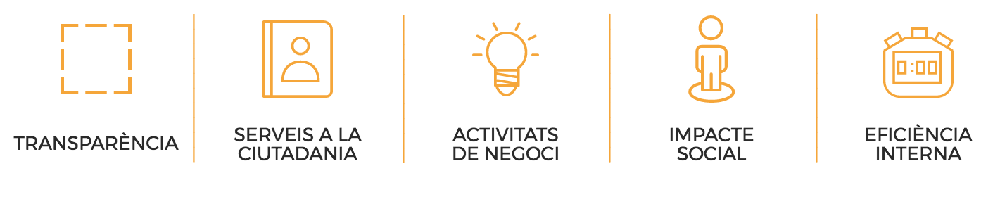
75,7b€
Estalvi de 1,7b€ en les administracions
Creating Value through Open Data
Foto: Fabian Blank
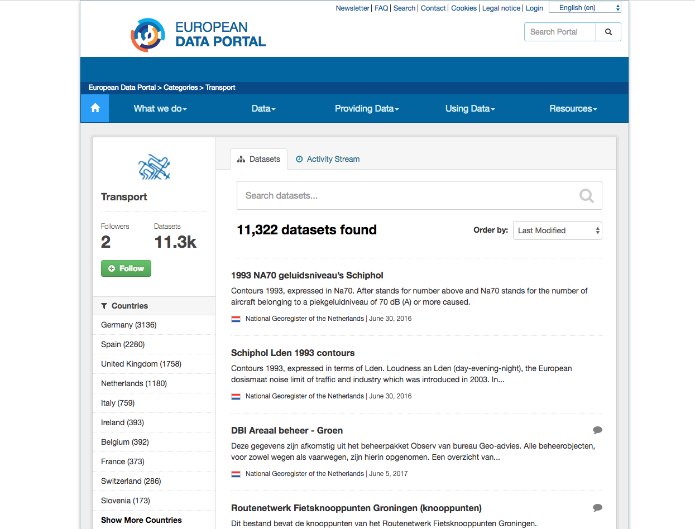
Foto: Markus Spiske
Foto: Markus Spiske
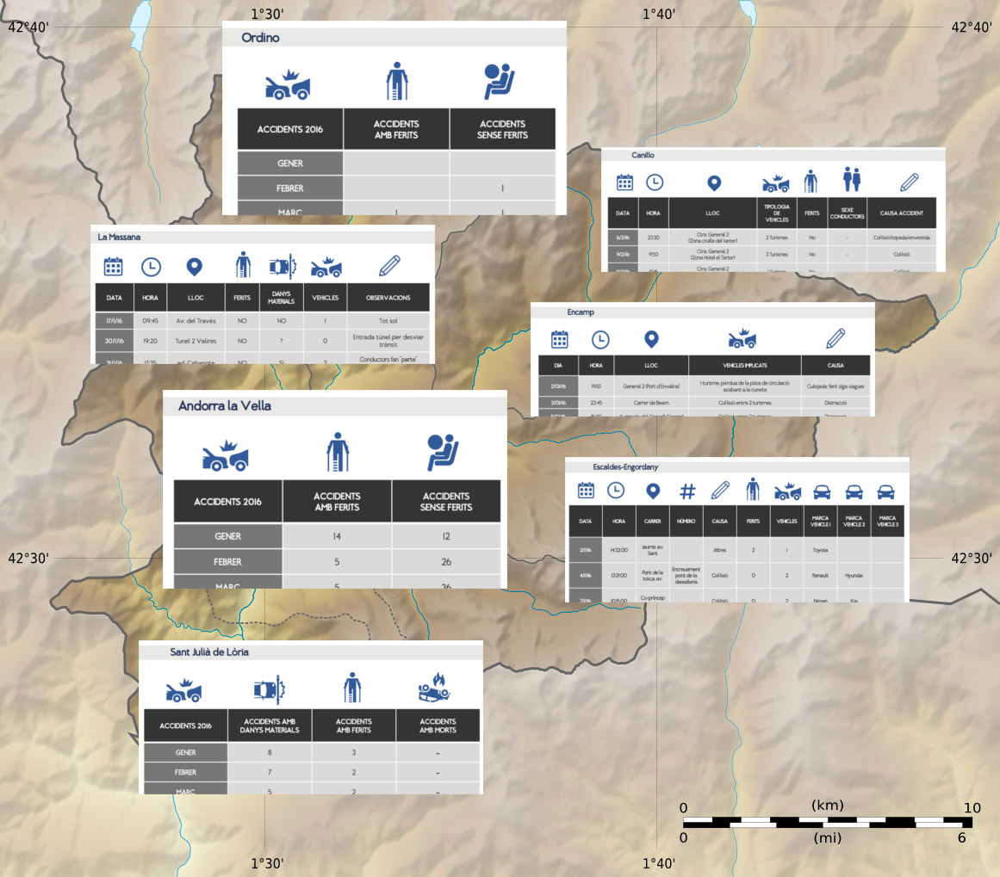
Foto: Markus Spiske
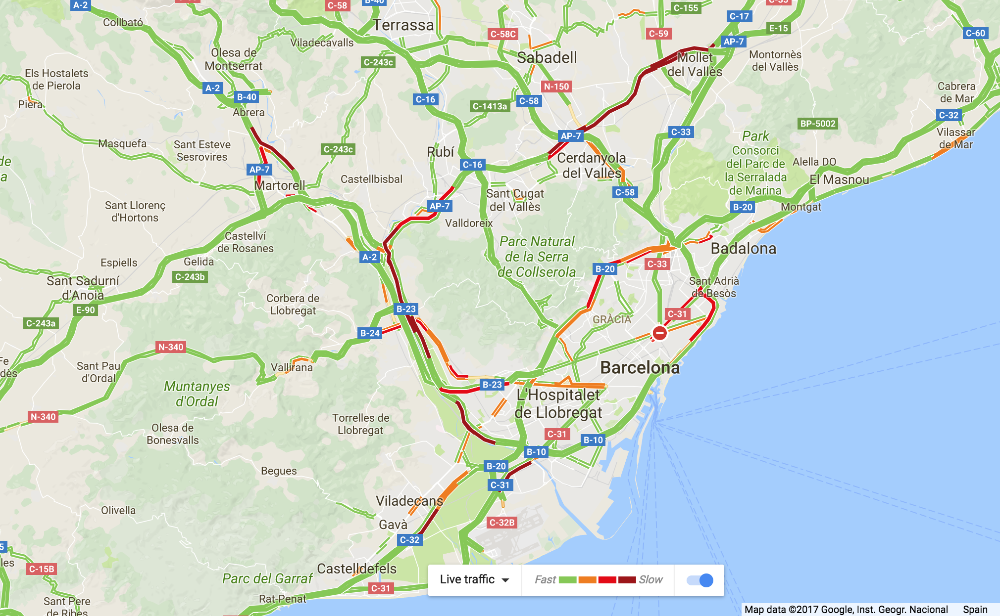
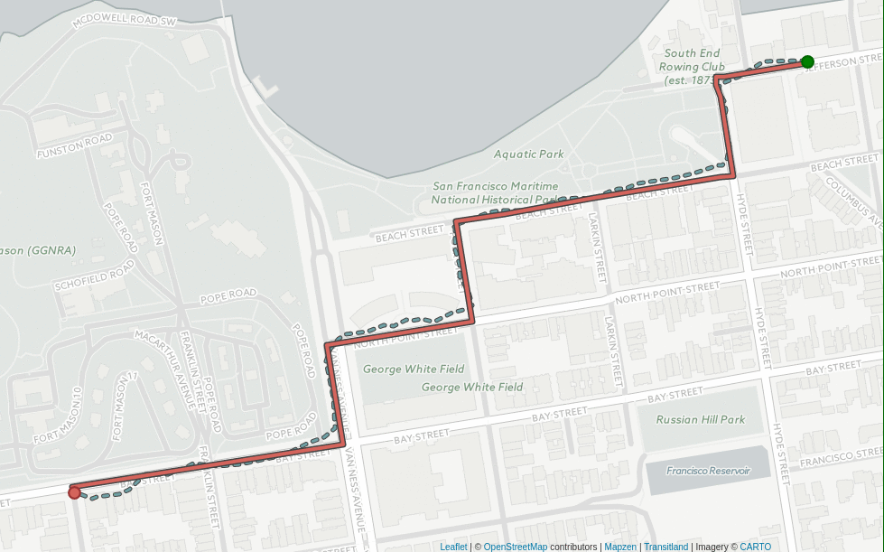
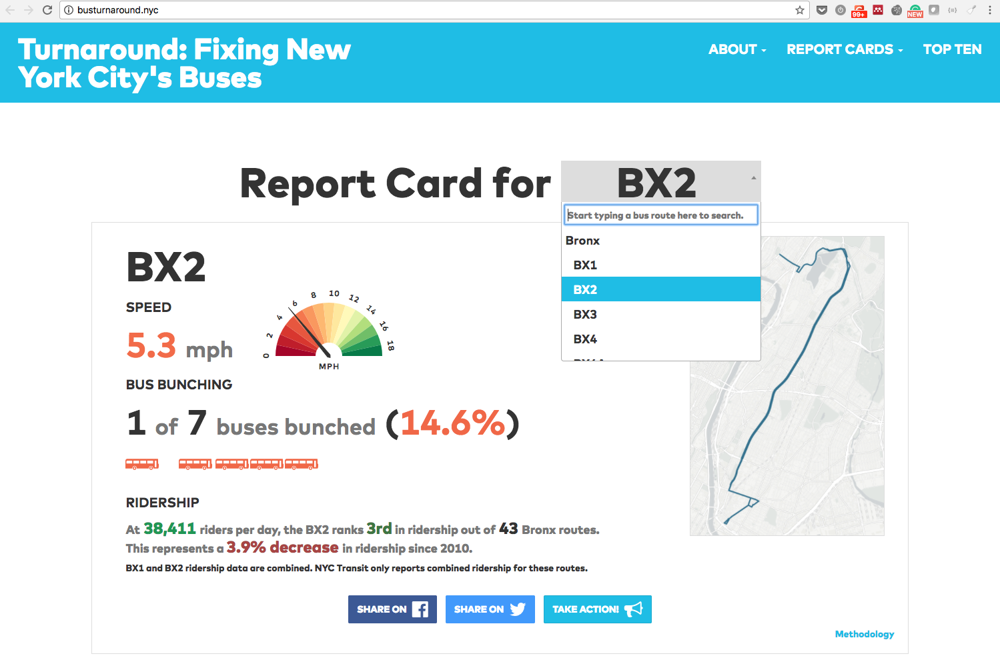
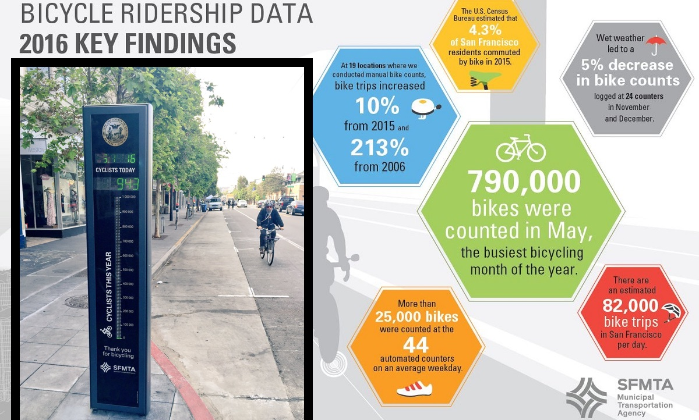
https://www.sfmta.com/about-sfmta/reports/bicycle-metrics
https://twitter.com/urbanlifesigns/status/730795172410232832
https://data.louisvilleky.gov/story/building-foundation-smart-traffic-management-louisville
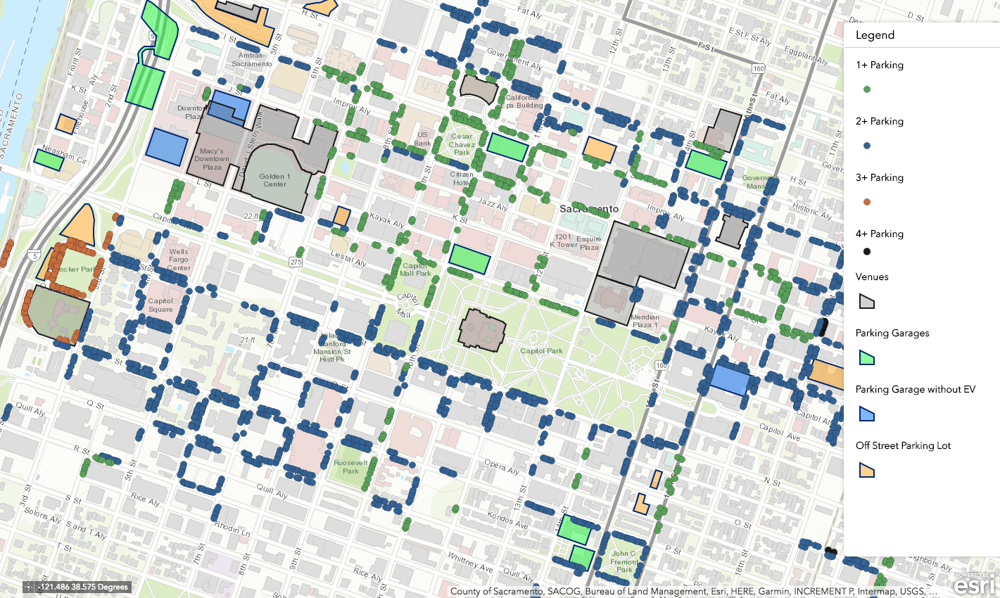
https://saccity.maps.arcgis.com/apps/webappviewer/index.html?id=79d3ac71c8ed405087d4511900317fca
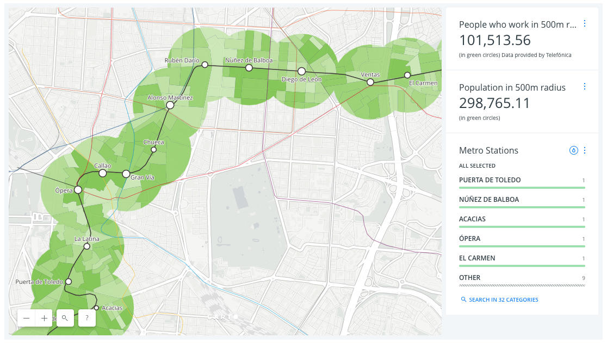
https://carto.com/blog/mapping-impact-madrid-line-5-shutdown/
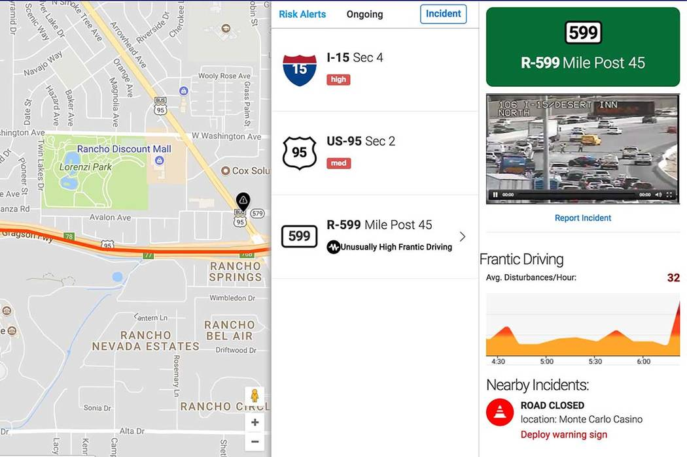
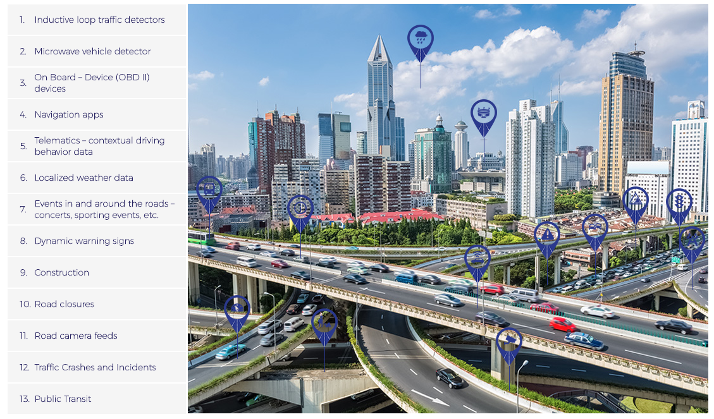